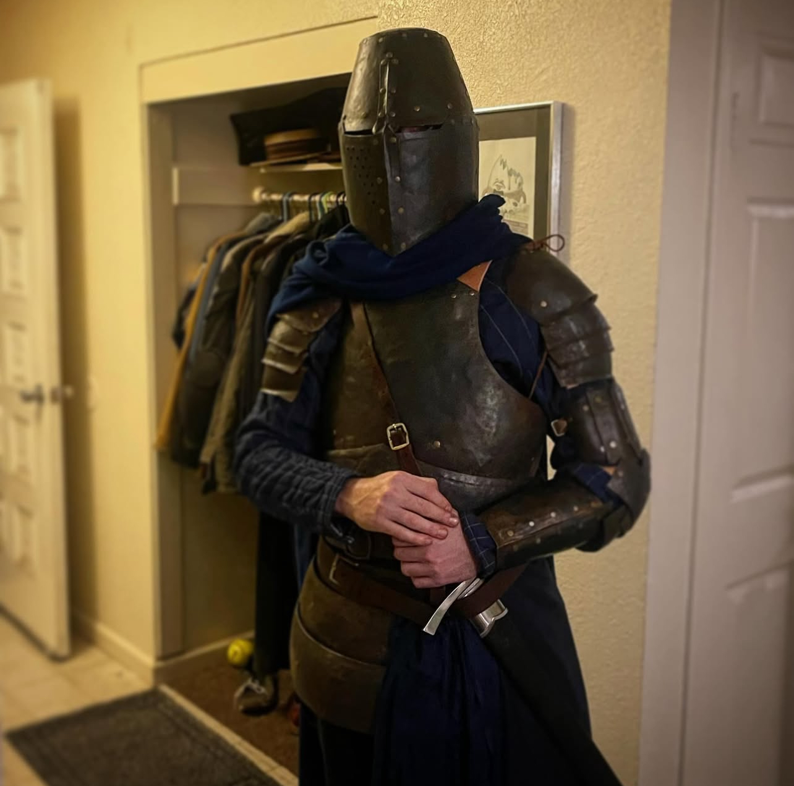
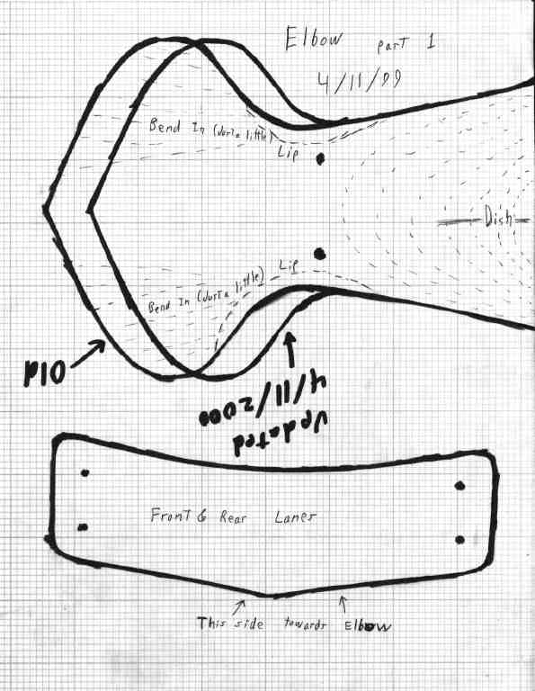
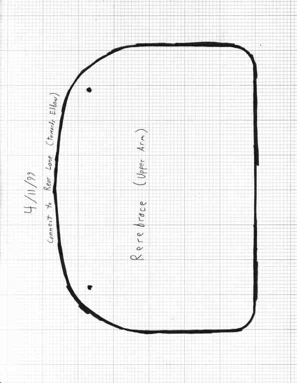
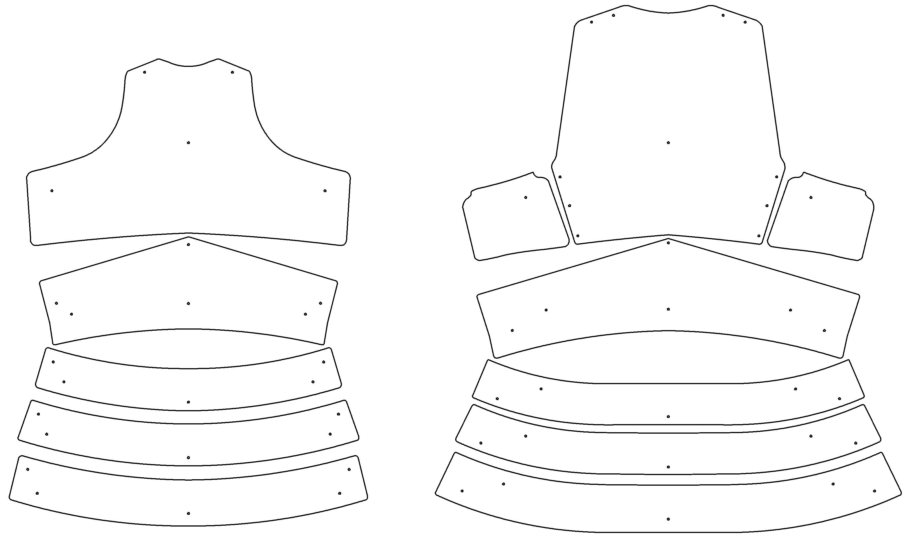
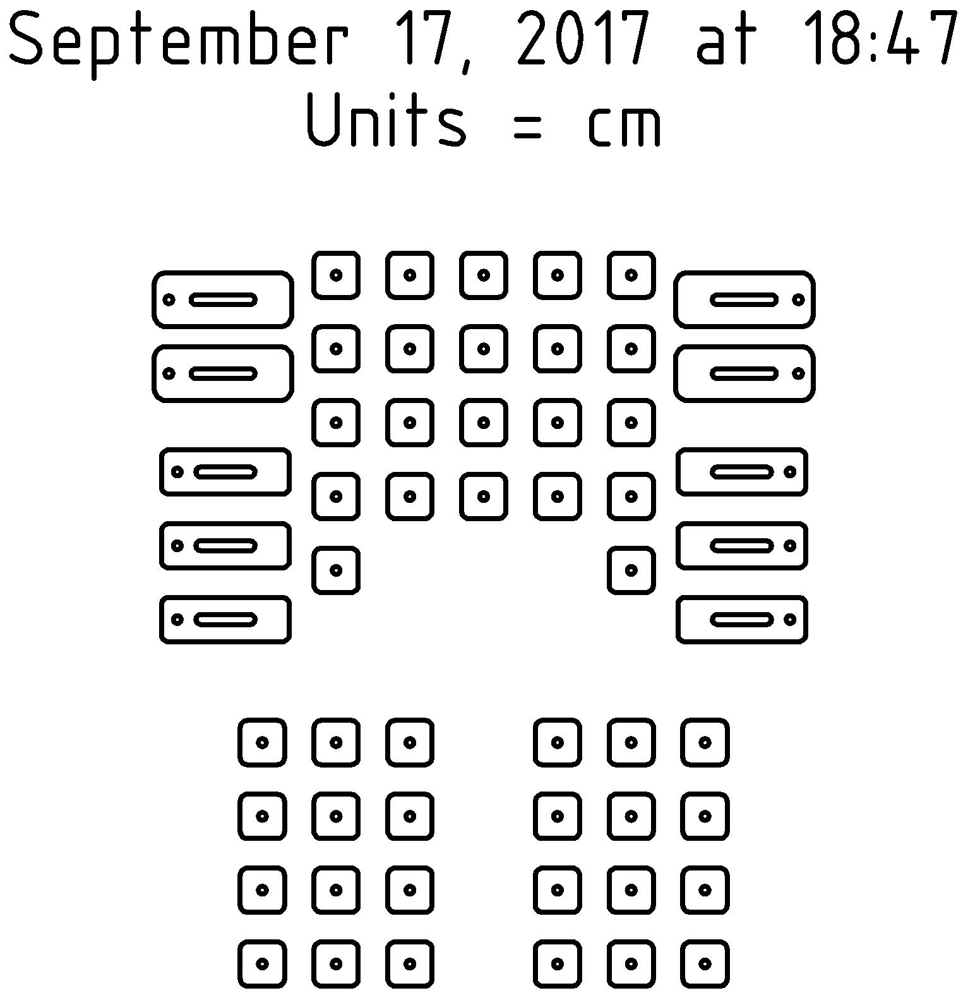
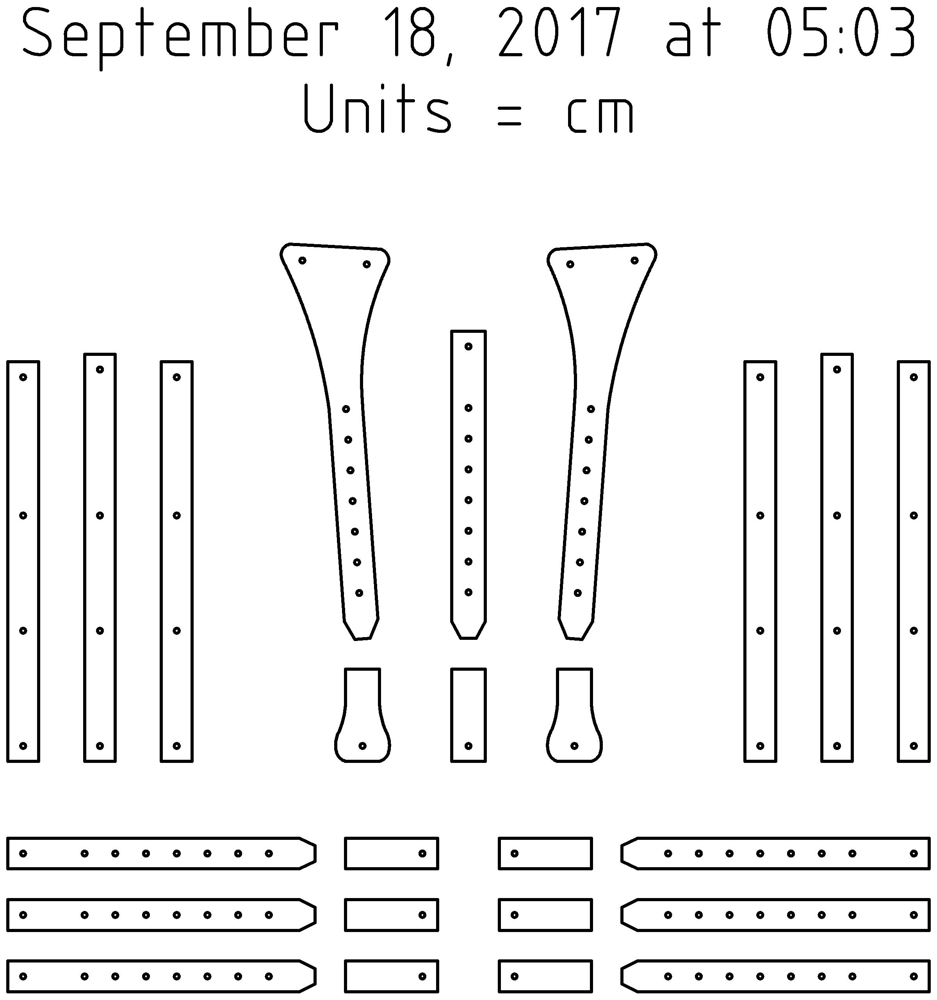

Built from patterns by Craig Nadler, this early 15th-century Italian-inspired armor has grown over years of experimentation. It is one of those projects that keeps teaching new lessons every time I return to it, and one that slowly turned from a costume into a character.


Introduction
Made with patterns by Craig Nadler, this build started as a way to make something ambitious with the tools I had. The arms, chest, and legs are Nadler patterns, and even the helmet grew out of that same research path.
How It Started
I started this armor after destroying an old filing cabinet and later realizing it could become material instead of trash. That shift from frustration to fabrication is still one of my favorite origin stories for a project.
The first pieces came from flattened cabinet steel, basic hand tools, and a lot of curiosity. I was working largely by instinct, teaching myself as I went, and that energy shaped the entire build.
Some years earlier I had already made myself a rough gambeson by taking apart a dress shirt, tracing the pieces onto a large section of blue fabric, and quilting the whole thing together with batting. It was crude, but it worked, and it ended up setting both the silhouette and the blue-and-white color scheme for everything that followed.
Patterns and Plate Development
One of my favorite things in the archive is how visible the learning process still is. Before polished hero photos or finished wear shots, there were graph-paper arm patterns, traced plate layouts, hardware planning, and the kind of flat-lay documentation that only exists when someone is really trying to think a build through piece by piece.





Further Development
As the project expanded, it became less about a single suit and more about building a character. Gambeson, cape, asymmetrical pauldron choices, and even color decisions all helped push it beyond simple plate assembly.
After the helmet came the arms, and that was when it really started to feel like armor. A simple tabard helped cover the gaps, a length of thrifted blue velvet turned into a cape, and the whole thing started to read as a complete persona instead of isolated pieces.
Later additions pushed that character even further. Once the chest and cuisses were in place, I leaned into asymmetry with a horseman's pauldron and pulled a little visual inspiration from the kind of fantasy armor I was seeing in Dark Souls and Elden Ring. Even the great helm crest owes something to that influence.
Finished, But Still Alive
I have declared this project finished more than once, and every time I end up coming back with another idea. At this point, the continued evolution is part of the appeal. It is not just a costume anymore; it is a record of craft growth over time.
It is hard, sweaty work, but it is also some of the most fun I have had making anything. I love the way it looks, I love the way it feels to wear, and it is always a hit at the Ren Faire.
I used to think the goal was to finally call it done. Now I am more interested in letting it keep evolving. That has become part of the craft for me too.